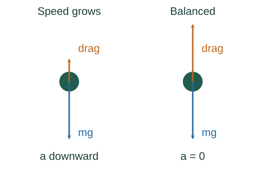

Derive terminal speed with quadratic drag
Terminal speed is the steady falling speed at which upward drag balances weight. It follows from a force balance once a drag model has been chosen.
What the symbols mean
C: dimensionless drag coefficient; ρair: air density; A: projected area; v: downward speed; g: gravitational acceleration magnitude.
When this applies
One-dimensional downward motion, constant mass and air properties, approximately constant C, quadratic drag, and negligible buoyancy.
Developing the argument

State the drag model
For this regime the drag magnitude is proportional to v². It acts opposite the velocity. This is a model of the fluid interaction, not a consequence of Newton’s law alone.
Write the equation of motion
Take downward as positive. Weight increases the downward velocity and drag reduces its rate of increase.
A closer lookWhy is the left side mass times acceleration? ↗Set acceleration to zero
Terminal motion means constant velocity, so the two force magnitudes balance. Solve the resulting equation for the positive falling speed.
Check stability and scaling
Below terminal speed, weight wins and speed increases. Above it, drag wins and speed decreases. The square root means quadrupling mass doubles the terminal speed if the other parameters stay fixed.
A worked example
For m = 80 kg, C = 1.0, ρair = 1.2 kg/m³ and A = 0.70 m², the model gives about 43 m/s. A changing body orientation changes A and C.
Derivation behind this calculation ↗A point to keep straight
Small particles in slow viscous flow can have drag proportional to v instead; their terminal-speed formula differs.
Check the assumptions and derivation ↗